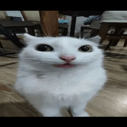
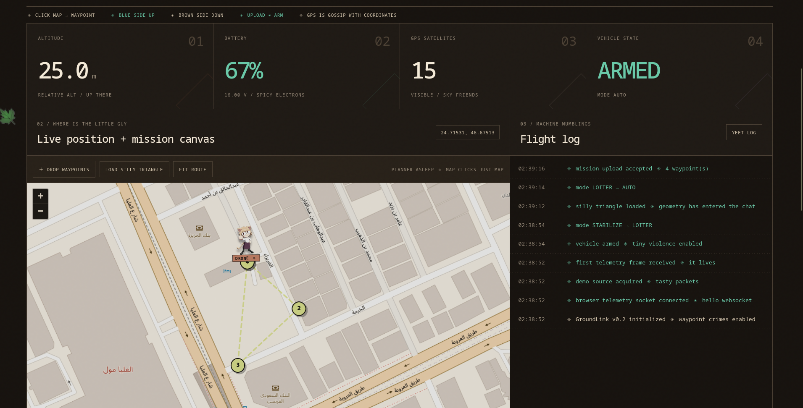

I build weird things.
Some of them fly.
Drones, code, Linux, hardware experiments, and questionable decisions made out of curiosity. This isn't a résumé wearing a website costume. It's the den.
Things I made.

Echo 03
An 87 g endurance-focused 3-inch quad tested to 27:12 in the air. The entire build is basically an argument with mass, drag, and battery chemistry.

Autonomous Flight
A 5-inch ArduPilot aircraft using GroundLink as its custom ground-control layer, with onboard vision planned on a Raspberry Pi.

The Steam Machine
Valve kept delaying the little Linux gaming box I wanted, so I repurposed a BC-250, installed CachyOS, and printed my own.

GroundLink
The software half of Autonomous Flight: a Rust ground-control station for MAVLink drones, currently bullying an imaginary vehicle before I connect the real one.
This slot is empty because the next build hasn't happened yet. Check back later, or don't, and be pleasantly surprised.
Things I learned.
I accidentally built a ground control station
07 SEP 2026 · FIELD NOTEWhy endurance builds made me care about cylindrical cells
22 AUG 2026 · FIELD NOTETeaching a 5-inch drone to talk to a laptop
19 AUG 2026 · FIELD NOTEBreaking Linux, then apologizing to Linux
11 AUG 2026 · FIELD NOTEStill tinkering.
This is a personal den, not a résumé wearing a website costume. I like projects that sit awkwardly between software and hardware: drones, Linux machines, telemetry, 3D-printed fixes, and whatever else makes me ask “wait, how does that actually work?” Serious engineering, playful presentation.